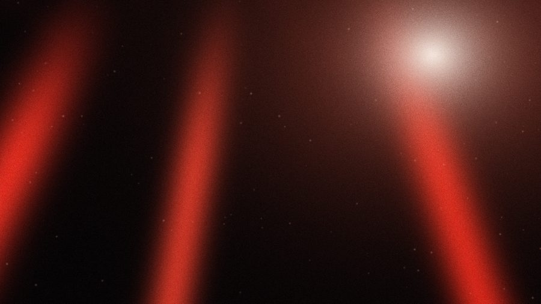
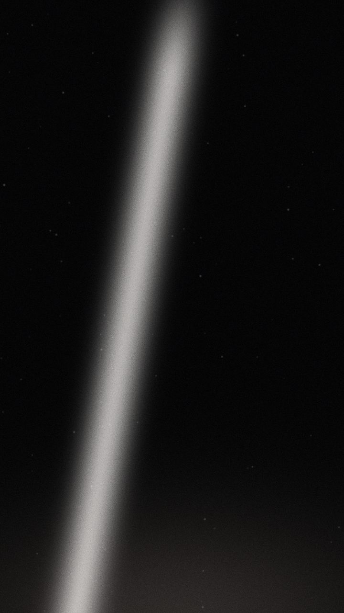
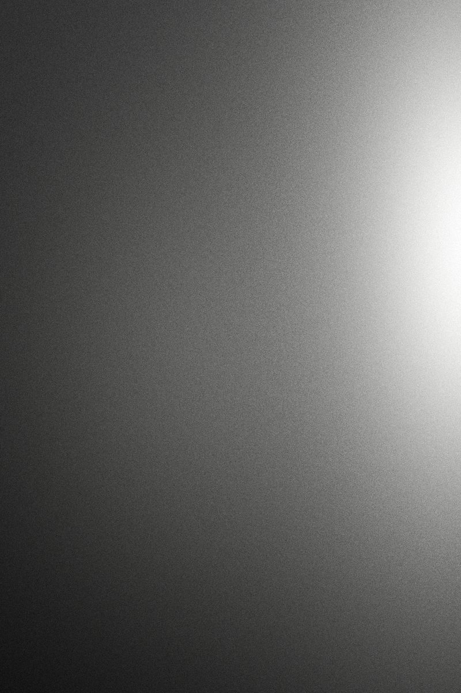
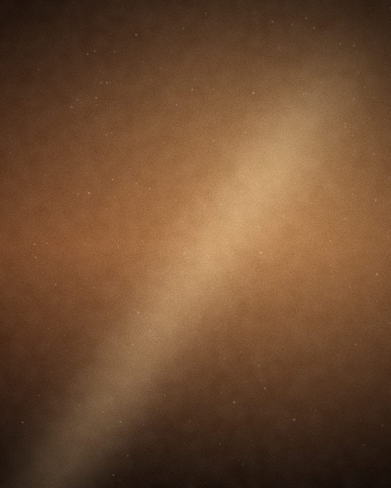

JP Silva
30.2672° N
97.7431° W
01Selected work · Live
On stage. In the pit.


Live performance film and stills. Camera and edit, shot from the pit and the wings.
02Music videos · Film
Cut to the beat.
-
MV — 2024Direction, Camera
Soundcheck
-
Film — 2025Direction, Camera, Edit
Working Title I
-
Live — 2025Camera, Edit
Live, Austin
Shot in the room.
Cut to the beat.
Nothing staged.
Portraits
03Photography
Portraits, monochrome series and behind-the-scenes stills. The quiet frames between shows.


04About
JP Silva
JP Silva is a filmmaker, producer and photographer based in Austin, Texas. He shoots live music, music videos and tours, and photographs portraits, landscapes and the moments behind the scenes.
The brief is always the same: find the honest emotion in the room and keep it.
From Bauru, BR To Austin, TX
05Contact